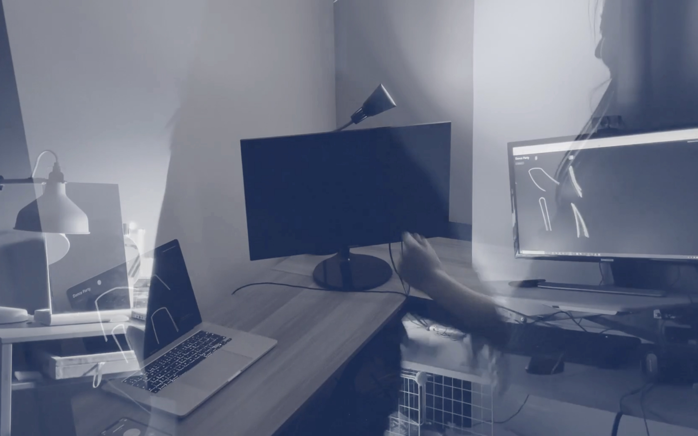

Can we use ML to facilitate remote human communication?

This project took myself and Jessica Chen 2 Weeks. My
role was UI/UX and Front-End Engineering.
Helping people communicate through movement
During the pandemic, Jessica and I were in our rooms meeting over zoom almost everyday, a
routine too familiar to many people across the world. We were located in 2 different
countries (Canada and United Kingdom) and wanted to build a project that would help people
connect in a non-conventional way. In the middle of a conversation while
brainstorming for projects, Jessica mentioned that it could be fun to build a dance party
room, and we set out to try it out.
We wanted to build something that helped encourage the freedom of dance expression, in a
remote setting, without the intimidation of being on camera; A platform for being present
with someone, sharing a moment - sharing a dance.

Using ML to obtain visual information
It was determined quite early on that in order for any visuals to be captured and
transferred to the platform, we would need to use computer vision to collect information. We
did not want the platform to utilize unfiltered camera videos and so we chose to use machine
learning model PoseNet, a pose estimation model, to capture joint location. While the pose
estimation is not the best for detecting more complex movement patterns, it was good for
creating an abstracted version of the moves, which allows for added anonymity.
Source:
ML5
Bo-t Language is a collaborative, dance platform
It encourages and allows for real-time movement
expression in remote settings. Here's a video showing it in action:

How it works
For the dance party platform to work, information needs to be first gathered from a host
machine and pushed to a public server link. The platform would require webcam camera to be
switched on, but would only collect and transmit lines drawn between joint location data.
Once a party attendee joins the server, their joint location data would also be collected
and transmitted back to the server so that both party attendees can see each other moving.
Additionally, it’s not a dance party without music so audio information is also hosted on
the server so that one person can switch on and off music or change music for the entire
party.
The program utilizes Node.js, Socket.io and Ngrok to host the public server, and p5.js,
ml5.js and html/css for interface design.
Host-Attendee Sharing
File Sharing
Server Hosting

Interface and Visual Data Sharing

'Party' Hosting
The project was designed to be used on web-based platforms due to built-in cameras being
very common and widely accessible within laptop and desktop devices. The desktop nature also
means that the camera is already set up in a backdrop and environment where remote workers
were already comfortable with. Individuals can simply host and start the platform on their
own laptop and send a link to friends or party attendees to join.